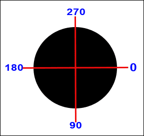
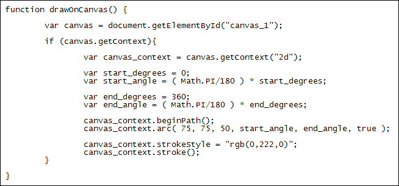
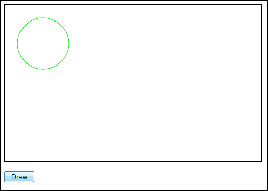
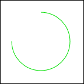
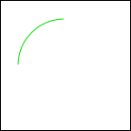
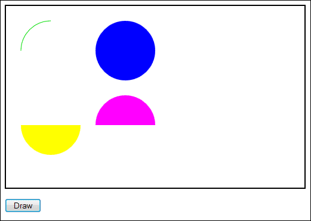

Draw Circles and Arcs on a HTML5 Canvas
Ongoing HTML5 Canvas Tutorial: 1 2 3 4 5 6 7 8 9 10 11 12 13 14 15
You can draw circles and arcs on a HTML5 canvas. This is done with the arc method. Between the round brackets of arc, you need 6 arguments:
x, y, radius, start_angle, end_angle, anticlockwise
You would use them like this:
canvas_context.arc( 75, 75, 50, start_angle, end_angle, true );
The X and Y are the coordinates for the centre of your circle. In the code above, we want the centre of the circle to be 75 pixels from the left edge of the canvas and 75 pixels from the top. We want the radius to be 50 pixels.
To get the start and end angles take a look at the following diagram:

A starting angle of 0 degrees is on the right, in the middle. An end angle of 180 degrees would be on the left, opposite it. However, angles are measured in radians. To convert from degrees to radians, you can use this:
var start_degrees = 0;
var start_angle = ( Math.PI/180 ) * start_degrees;
var end_degrees = 180;
var end_angle = ( Math.PI/180 ) * end_degrees;
The Math.PI /180 part is where you do the converting to radians. You then multiply by how many degrees you actually want.
The other part of the arc method is anticlockwise. This is a Boolean value you set as either true or false. True means draw the arc anticlockwise, and false mean clockwise.
Unlike rectangles, however, you need to call another method of the 2D context object before you can draw circles and arcs, the beginPath method:
canvas_context.beginPath();
This just tells the 2D context object that you want to start drawing a path.
After you have drawn your path, and used the arc method, you need to add a fill or stroke:
canvas_context.stroke();
canvas_context.fill();
You can also add a stroke style:
canvas_context.strokeStyle = "rgb( 0,222,0 )";
canvas_context.stroke();
Or a fill style:
canvas_context.fillStyle = "rgb( 0,222,0 )";
canvas_context.fill();
Let's get some practice done.
You can create a new page for this. Locate your canvas template.txt file in Windows Explorer, or Finder on a Mac. Double click the file to open it. Now save it with the name circles.html.
Once you have your new page, add the following code:

You don't have to have the same stroke colour as us. You can choose different RGB values, if you want. Or try a hexadecimal or named colour value .
Save your work and view the results in your browser. When you click the button, you should see this:

Because the numbers for the start and end angles were 0 and 360, a full circle is drawn.
Change your start and end angles to 180 and 270. Save the changes, refresh the page, and click the button again. The result will be this:

Because we had anticlockwise set to true the arc is drawn from 180 anticlockwise to 270. Change the anticlockwise Boolean value to false. When you click the button, you'll see this:

The arc is now shorter. This is because it is being drawn clockwise form 180 degrees to 360.
If you want to start drawing a new circle or arc (or any shape, really) you should call beginPath again. What this does is to erase all the current paths stored in memory. It doesn't erase anything on the canvas, however, just whatever was previously on the list to be drawn. With that in mind, try these exercises. First, though, it might be easier to create a separate function to convert degrees to radians. You could then make the call like this:
var start_angle = getRadians(180);
We've called our function getRadians, and then passed it an angle in degrees. The function would be this:
function getRadians(dgrs) {
var degrees = ( Math.PI/180 ) * dgrs;
return degrees;
}
OK, here are the exercises.
Exercise
Draw a filled circle to the right of the arc you already have. Set the fill
colour to blue.
Exercise
Draw a filled, yellow semi circle.
Exercise
Draw another semi circle, make it the bottom (or top) half of the one you already
have. Use any colour for the fill style.
When you complete all three exercises, your canvas should look something like this:

In the next part of this Javascript canvas tutorial, you'll learn how to draw paths and lines.